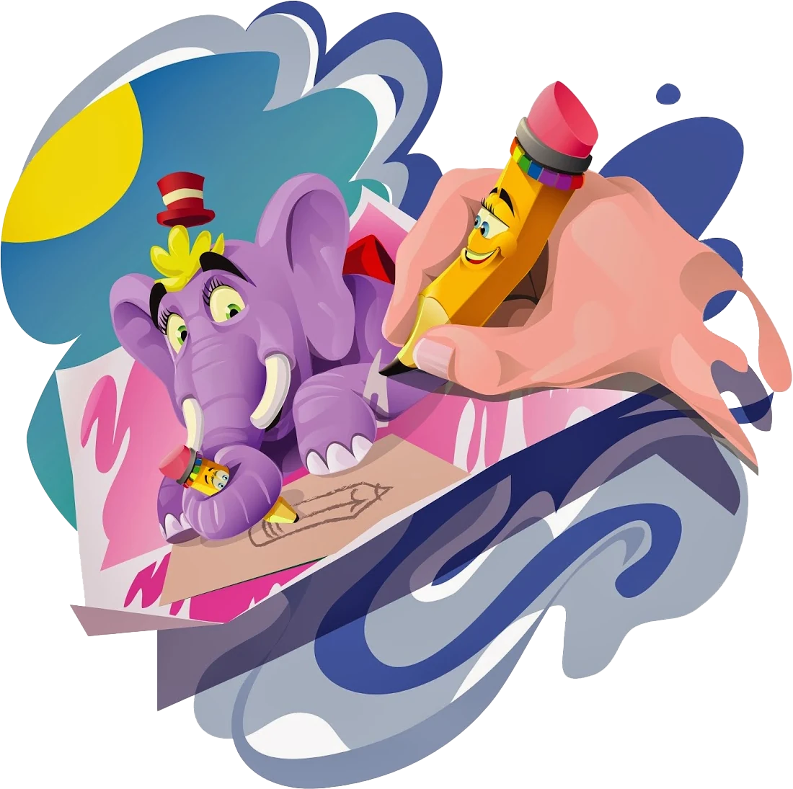

Ilustracja i projektowanie postaci
Wybrane prace: od maskotek i postaci do gier po ilustracje książkowe. Łączy je praca nad charakterem, gestem i czytelną sylwetką.
Mam wypracowany, spójny styl, a jednocześnie potrafię dostarczyć dokładnie taki obraz, jakiego wymaga jego funkcja: znak marki, ikonę czytelną w małym rozmiarze albo ilustrację, która prowadzi opowieść.
